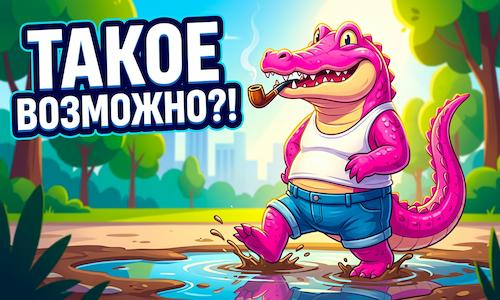
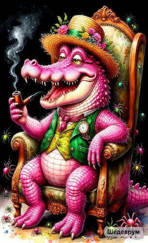

Генерация видео нейросетями: обзор Google Flow, Leonardo AI и Qwen (2026)
Друзья, девятая статья долго собирал. Столько разных препонов. До одного не доберёшься без VPN, другой платный, третий вообще непонятный...
🎸 Приступим
Задумал для соцсетей сгенерировать маленький видик с котиком — идея пришла! Котик у меня уже есть. Казалось бы, мелочь: вставил котика, написал промпт, сидишь, ждёшь.
Дождался... Кот получился вообще не тот, которого ожидал! А я промпт ещё с переводчиком на английский обрабатывал!
🎸 Ожидание vs Реальность
🎵 Google Flow — музыкальный эксперимент
Началось с того, что у GOOGLE наткнулся на рекламу:
"Мы наблюдали, как вы создаёте невозможное с @FlowbyGoogle… сегодня семья Flow растёт. 🚀 Знакомьтесь с @googleflowmusic (ранее ProducerAI) — автономным сайтом, который помогает вам создавать, делиться и ремикшировать оригинальную музыку."
Пошёл, зарегистрировался — там просто. Закинул котика, всё чётко: кот, гитара...

📸 Промпт для кота-музыканта
А получил того самого рыжего грустного кота, которого видите вверху! Прилагаю песню... Думаете, ту, которую хотел?
Оказалось, с русским у них напряг! Или может, я не туда зашёл, или не так промпт написал. Они мне два раза "ноу-ноу" — ногу свело, типа "мы вас не понимаем". Опять заказал переводчика, вот так и работали.
Песня всё равно вышла на английском, но я уже представляю, как можно использовать. Мы его пристроим! 😄
Текст песни:
"Я снова сижу на жёстком корпусе, чёрная кожа прохладнее пола... Вы оставили окно открытым всего на дюйм, и горный воздух пахнет дождём..."
Я решил: этого шедевра с меня достаточно! 🎭
🦎 Leonardo AI — розовый крокодил
Посмотрел ещё по нейросетям — Leonardo? У него ни разу не был, пойду к нему, думаю.
Скажу так — мы не поняли друг друга сразу. Шипит на меня по-английски и всё. Пришлось брать переводчика. Кое-как нашли общий язык.
Решил даже не усложнять задачу. "Сделай", говорю, "РОЗОВОГО КРОКОДИЛА по картинке". Я ему картинку, промпт — пусть по лужам прыгает!

📸 Промпт для крокодил с трубкой
Сижу, жду... Выдаёт картинку!

📸 Промпт для крокодил Геха
Тут даже думаю: да, Leonardo, да минус 70 кредитов... Ну хорошо, дал ему шанс на исправление — не сильно-то улучшилось.
А время — ночь. "Дай", думаю, "это скачаю". Короче, вот что получилось:
🐊 Розовый крокодил с трубкой (Leonardo AI)
Вот он, мой РОЗОВЫЙ КРОКОДИЛ с трубкой! 🐊
💡 Совет: Сегодня к Leonardo заходил — там опять 150 кредитов ждут. То есть бесплатно можете испытывать на 150 кредитов. Обязательно берите переводчика и готовьте хороший промпт на английском!
Видео-работы посмотрел — как-то не очень. Да, там может чётко прорисовка, но в движении мне показалась какая-то скованность.
🔧 Технические детали Leonardo AI (2026)
1.1. Модели и архитектура:
Phoenix Model — основная модель 2026 года...
Phoenix Model — основная модель 2026 года с поддержкой "гиперреализма" и абстрактных концепций
aitoolsdevpro.com
Alchemy v4 — продвинутый пайплайн пост-обработки для улучшения освещения, контраста и детализации
aitoolsdevpro.com
Motion v3 — генерация 10-секундных HD-видео с контролем камеры (панорама, зум, наклон)
2.Кредиты и стоимость:
Бесплатный тариф: 150 кредитов ежедневно (сбрасываются каждый день)
aitoolsdevpro.com
Apprentice ($12/мес): 8,500 кредитов в месяц
Artisan ($30/мес): 25,000 кредитов в месяц
Maestro ($60/мес): 60,000 кредитов в месяц
Стандартная генерация: 1 кредит
Alchemy режим: 8-16 кредитов (в 8-16 раз дороже!)
aitoolsdevpro.com
Видео: ~100 кредитов за ролик
3.AI-pi для разработчиков:
REST API с поддержкой Python, Node.js
aitoolsdevpro.com
Pay-as-you-go: от $0.002 за генерацию
aitoolsdevpro.com
До 10 одновременных запросов (на платных тарифах)
aitoolsdevpro.com
Время генерации: 8-15 секунд на изображение
aitoolsdevpro.com
. Плюсы и минусы:
✅ Плюсы:
Высокий контроль (guidance scale, tiling, seed)
aitoolsdevpro.com
Консистентность ассетов (лучший для игровых ресурсов)
aitoolsdevpro.com
Полные коммерческие права на все изображения
aitoolsdevpro.com
Приватные генерации (на платных тарифах)
aitoolsdevpro.com
Минусы:
❌
Сложный интерфейс (круче кривая обучения, чем Midjourney)
aitoolsdevpro.com
Кредиты быстро тратятся с Alchemy
aitoolsdevpro.com
Видео ограничено 10 секундами
aitoolsdevpro.com
Мобильная версия тяжёлая (лучше на десктопе)
aitoolsdevpro.com
. Интеграция:
Zapier и Make.com для автоматизации
aitoolsdevpro.com
Пример: Автогенерация изображений для блога через Google Sheets → ChatGPT (промпт) → Leonardo API → WordPress
aitoolsdevpro.com
Советы по оптимизации:
Prototyping: Сначала генерируй без Alchemy (дешевле), потом включай для финала
aitoolsdevpro.com
Prompt Magic v3: Авто-улучшатель промптов (работает "за кулисами")
aitoolsdevpro.com
Фиксированный seed: Для одинаковых стилей используй один и тот же номер
aitoolsdevpro.com
Weighting: (keyword:1.2) — усиливает важность слова в промпте
aitoolsdevpro.com
Картинки выдаёт, конечно, сочные. Ну тут как промпт напишешь — чем подробнее, тем качественнее получится картинка или видео!
🤖 Qwen — мой любимчик
И вот мой любимчик QWEN! По работам нейросетей понимаешь, что каждая заточена подо что-то одно. Кто-то в медицине силён, у кого-то код получается хорошо, у кого-то картинки, у кого-то видео.
С кодом у Qwen всё хорошо, а с видео тоже немного может своё выдать, но в основном получается прикольно.
Почему Qwen: Он прост как три рубля, дружелюбен, всегда поддержит, всегда тут. Хочешь поболтать — да ради бога, сколько угодно и на любую тему!
Вот он с картинки видео сгенерировал — так-то хорошо получилось! Это как фото оживил. И при этом ничего сложного нет в установке: забил в адресную строку и скачал.
Он у меня вообще стоит в молниеносном доступе: мышью раз вниз — и привет! 👋
крокодил по лужам
Но вот это я уже приписал промпт ради эксперимента — видео от него. Мультики делать — это просто огонь! Такие забавные рыжики коты! 😁
😾😾Танец рыжих
🎯 Итоги
Друзья, вывод простой: каждая нейросеть — инструмент под конкретную задачу. Где-то нужно терпение, где-то переводчик, где-то правильный промпт.
Но когда находишь "свою" нейросеть — это как найти друга! 💪
Понимаю что хочется бесплатного ИИ , но увы, да и конфетку из ничего не сделать! 🍬
По указателю 👇 Вы 🫵 можете попробовать за символическую цену (чашка кофе) сотворить, что то впечатляющее, вдруг окружающим понравится🤔🔥